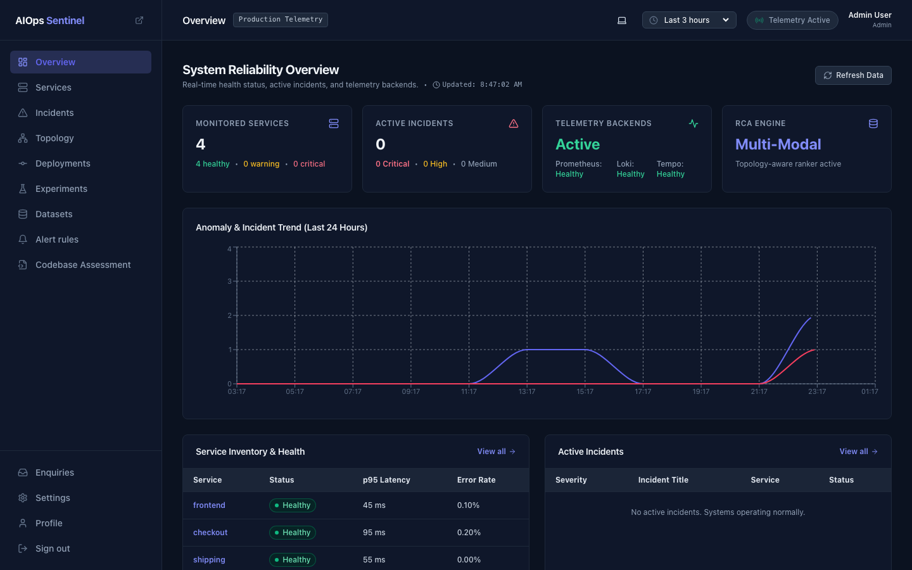

Verify Code Before Deployment.
Guard Reliability at Runtime.
AIOps Sentinel unites pre-deployment codebase assessment across 10 critical dimensions with real-time distributed telemetry, non-parametric anomaly detection, and topological root cause analysis.

Two Connected Capabilities
Built for modern cloud-native architectures and rigorous engineering standards.
Pre-Deployment Codebase Assessment
Upload project folders or ZIP packages to evaluate production-readiness before code touches staging or production. Assesses architecture, error resilience, security posture, configuration management, and test coverage using AST parsing and deterministic heuristic rubrics.
- SARIF and HTML compliance report exports
- Automated CI/CD policy quality gates
- Zero execution sandboxing for complete safety
Runtime Reliability Intelligence
Ingest distributed telemetry directly via OpenTelemetry, Prometheus, Loki, and Tempo. Detect subtle performance degradation using non-parametric Median Absolute Deviation (MAD), online EWMA drift tracking, and multi-variate Isolation Forests.
- Topological Random Walk with Restart (RWR) RCA
- Validated against the official RCAEval benchmark
- Automated incident remediation with advisory locking
Verified Platform Architecture
Enterprise-grade containerized microservices ready for cloud deployment.
FastAPI Backend
Python 3.11 asynchronous API engine with SQLAlchemy 2.0, Alembic migrations, and Pydantic v2 schemas.
Next.js 14 Frontend
React 18 application with WCAG 2.2 AA compliant typography, dual themes, and responsive layouts.
PostgreSQL & Redis
PostgreSQL 16 relational database with advisory locking and Redis 7 durable queues.
OpenTelemetry Core
Full integration with OTel Collector, Prometheus metric scraping, Loki logs, and Tempo tracing.